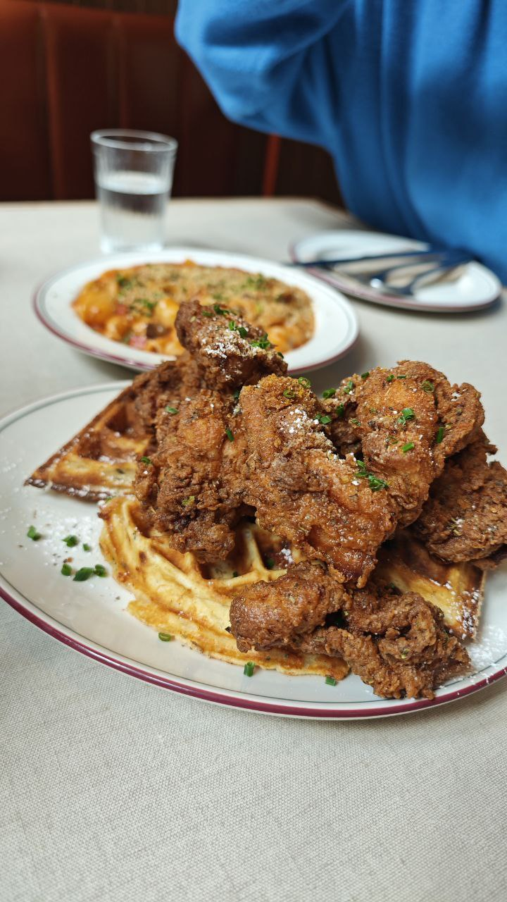
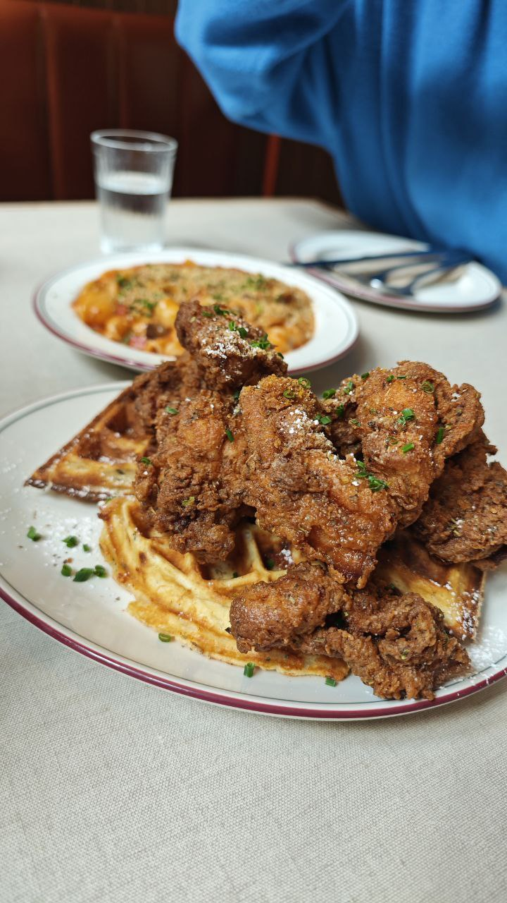

MELBOURNE FOOD DIARIES
From cafes to the kitchen, here's everything I cooked and ate in melbourne!
All Righty Folks! We're jumping straight into the action with a list of all the grub I've been chowing down on (and I've been chowing on a lot!) Melbourne is a little something of a food heaven if I were to be frank (who's frank?); with cuisines from all over the world culminating within this graffiti-covered party town. Though the prices for eating out aren't exactly cheap, not a single meal has missed! The food always slaps somehow (or maybe I'm just easy to please). And with aesthetic cafes and restuarants lining the streets and little alleyways, it feels like my quest to try em all seems unending...But here I go anyway!
(these are put in no particular order btw so look through them all muahahaha)
CAFES & RESTAURANTS
#1 Japnese Curry Rice: Tokyo MottoMelbourne CBD, Chinatown
 I got the Fried Ebi Curry Rice for $16.50 (hint: 5% discount if you pay in cash)
I got the Fried Ebi Curry Rice for $16.50 (hint: 5% discount if you pay in cash)
Food: 8/10
Price: 9/10
Ambience: 7/10
Overall: 8/10
Definitely a spot I've come back to more than once simply because it's so satisfying and filling. And the prices are pretty affordable [yes $16 for a meal is considered affordable over here :'(] And also the crunch of their tempura is just MMph perfection
#2 Brunch & Coffee: Brick Lane Melbourne
Melbourne CBD, Guildford Lane
 The Eggs Benedict and Big Breakfast for $24.90 each ~
The Eggs Benedict and Big Breakfast for $24.90 each ~
Food: 9/10
Price: 7/10
Ambience: 8/10
Overall: 8.5/10
I lovee this spot, it was the first brunch place I went to with my family in Melbourne, and the food was flavourful and warm and everything we needed after just settling down in the cold wintry melbourne. Prices were standard cafe $20-40 but the portions are huge so you could cut the price by sharing with a friend! The ambience was also so vibey albeit a bit hectic because this place was poppin! also bonus points because they were playing james brown ~ & bonus bonus points because it's located in Guildford lane the vibeyest road known to man.
#3 Italian Pizza: Farro Pizzeria Fitzroy
Fitzroy, 301 Brunswick Street
Polenta Chips, Margherita & Patate E Tartufo Pizza (haha I did not pronounce that correctly)
Food: 9/10
Price: 8/10
Ambience: 10/10
Overall: 9/10
We unintentionally stumbled into this place while exploring Fitzroy but bOI it was some bussin pizza indeed. There was such a sophistication and depth of flavour I had never tasted before in pizzas (but to be fair I only ever eat at dominos and pizza hut) so I was thoroughly impressed!
#4 American-style Brunch: Operator Diner
Melbourne CBD, Spring Street
 

 Chicken & Waffles, Pancakes, Coffee, Hot Chocolate
Chicken & Waffles, Pancakes, Coffee, Hot Chocolate
Food: 9.5/10
Price: 8/10
Ambience: 11/10
Overall: 9.5/10
Okay so Operator Diner is like THE SPOT that we consistantly keep going back to HAHA. Also because it's near where we live. The retro ambience and sinfully-delicious breakfast/lunch options just make this place a top-tier hangout spot. It's like the cafe they hang out in in Friends, this is that third space for us. Also cuz we keep wanting to try more of the menu.
#5 Hokkaido Soup Curry: Waku Waku
Melbourne CBD, Little Bourke Street
 I shared with some friends but it was about $21-ish per person for their dishes
I shared with some friends but it was about $21-ish per person for their dishes
Food: 6/10
Price: 6/10
Ambience: 5/10
Overall: 5.5/10
A little overhyped, the food was pretty average. But what made it even less stellar was how cramped the restaurant the eatery was. They also gave us a table meant for two and put an extra chair (which kept getting knocked into by people walking in and out). Their specialty was also the curry rice but they presented a very thin, light type of curry which I guess would be appreciated by some but just came as underwhelming to me.
#6 Korean Fried Chicken: Doma
Melbourne CBD, Spring Street
Sweet chili & soy sauce chicken, seafood pancake, and LOTS of free side dishes
Food: 8/10
Price: 8/10
Ambience: 8/10
Overall: 8/10
My goooodness if you're a korean chicken lover like yours truly, you can't resist coming back here. There's over 10 different choices of chicken to choose from and their all SEDAP I especially like snowy cheese. They also have their very popular hotpot and other dishes. Overall prices are pretty affordable as well, especially if you share with a big group of friends.
#7 Classy Japanese Dining: Lunar by Hikari
Brunswick, Sydney Road
Chicken Katsu Sando and Wagyu Sukiyaki ~
Food: 9.5/10
Price: 8/10
Ambience: 10/10
Overall: 9.5/10
The most aesthetic little cafe ever ^^ The aesthetic reminds me of those japanese zen gardens mixed with modern elements. It comes with its own hallway entrance, just stepping into the place made us feel BOUGIE. Not to mention the melt in your mouth wagyu beef. Prices are average to slightly pricey but I'd pay for the experience and ambience.
#8 Affordable Brunch: Cafe Excello
Melbourne CBD, Spring Street
 Atlantic Breakfast, Lasagna, and Omelette for about $15-17 per person
Atlantic Breakfast, Lasagna, and Omelette for about $15-17 per person
Food: 7/10
Price: 9/10
Ambience: 9/10
Overall: 8.5/10
I love that most of everything on the menu is less than $20, and they are SO generous with the serving portions. The cafe is really cozy, and I could sit there all day doing wordle and drinking a cuppa. The food is warm and hearty, made to fill the stomach more than please the eyes. One of my fav brunch spots for sure.
#9 Taiwanese Cuisine: My Lost Piece 古早味
Melbourne CBD, Spencer Street
(i can't remember what I ordered actually but it was sedappp)
Food: 7/10
Price: 9/10
Ambience: 6/10
Overall: 7/10
For those looking for their taiwanese cuisine fix, this was the best most affordable taiwanese meal I've had in Melbourne thus far. It really does taste like the meals I had in taiwan. Prices were all $10-20 as well!
#8 Shibuya Toast & Donburi: Dopa
Sydney Darling Harbour
Matcha Shibuya Toast for $15.90, out of this world!
Food: 10/10
Price: 8/10
Ambience: 7/10
Overall: 8/10
I'm biased for the food rating because THAT SHIBUYA TOAST OOMPH; Perhaps the best shibuya toast I've ever had, I can't go back to TukTukCha anymore frfr. The dons were also really delicious and worth the price ($13-$20). I literally ate here twice within 4 days, and will go back to sydney just to try it again HAHA
DESSERTS :P
#1 Artisanal Donuts: ShortstopMelbourne CBD, Guildford Lane
The viral maple butter crumble donut for $8.90
10/10 yumz I love shortstop all their donuts are a work of art and conduct major destruction on my tastebuds (and my calorie count!) This was like the first dessert places I went, under recommendation from the lovely ms lilglowglad XD and it did not disappoint!
#2 Japanese-inspired flavours: Kori Ice Cream
Glenferrie, Hawthorn
They had a 1 for 1 double scoop deal ~ ^^
Really interesting flavours; Fuji Apple,Tofu Vanilla, Miso, Mango Kinako, Milky Peko Chan(milk candy), Hojicha Hazelnut to name a few.
#3 Asian Dessert Cafe: Amiri
Melbourne CBD, QV
Thai Milk Tea Bingsoo with pearls and crumble
This place has a min $20 spend but dayum everything on the menu is already above $20 so there ain't two ways about it. Despite the prices I did still enjoy the thai bingsoo. The place is kinda crowded tho and despite its cute exterior, the seats be giving ass pain...
#3 Cannola Desserts: Cannoleria
Melbourne CBD, QV
Thai Milk Tea Bingsoo with pearls and crumble
This place has a min $20 spend but dayum everything on the menu is already above $20 so there ain't two ways about it. Despite the prices I did still enjoy the thai bingsoo. The place is kinda crowded tho and despite its cute exterior, the seats be giving ass pain...